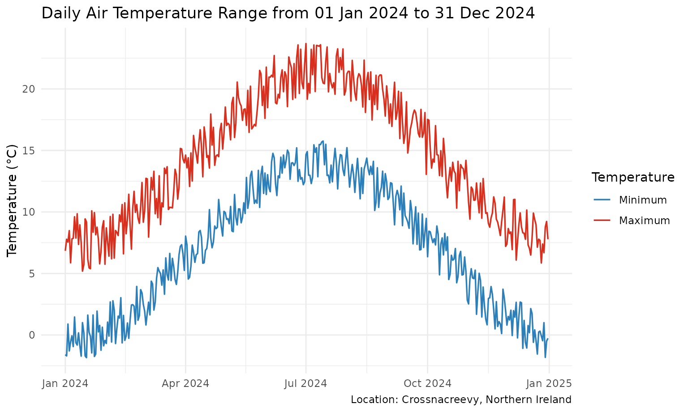
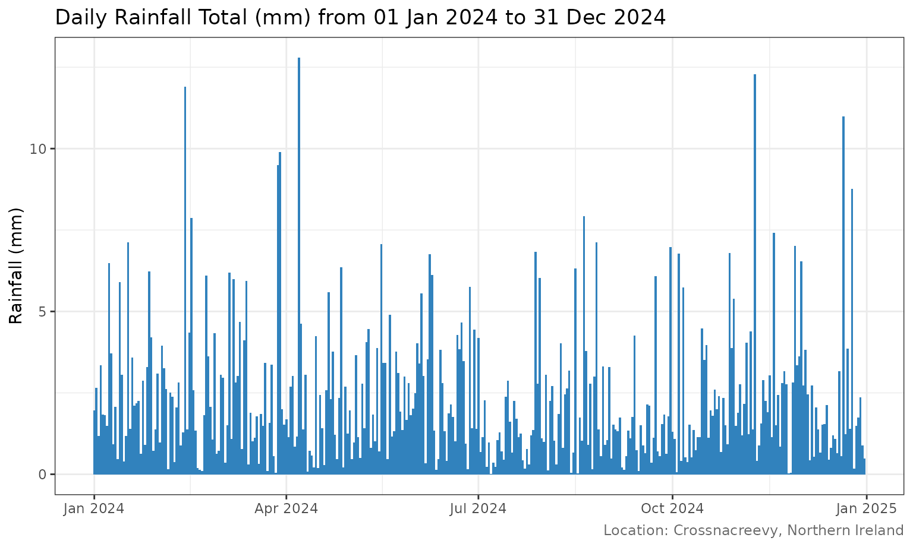
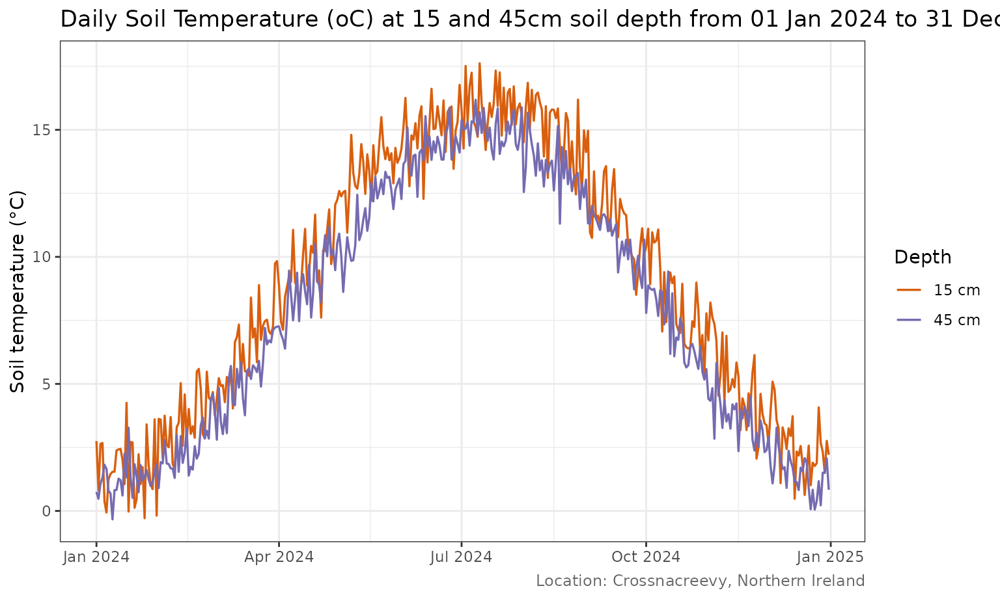
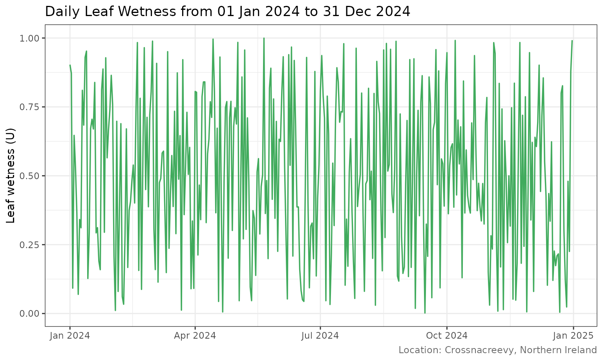
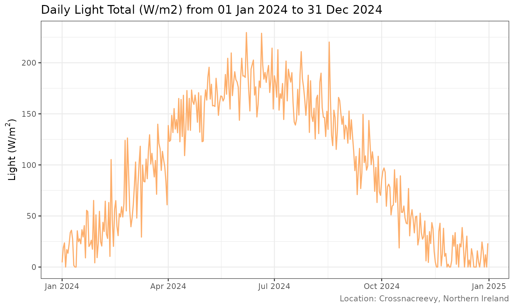
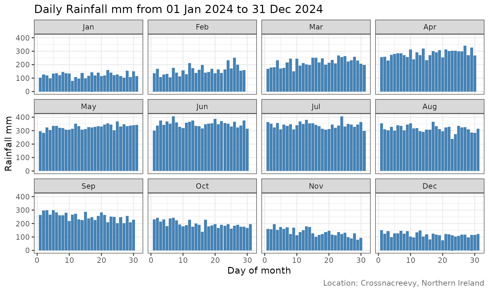
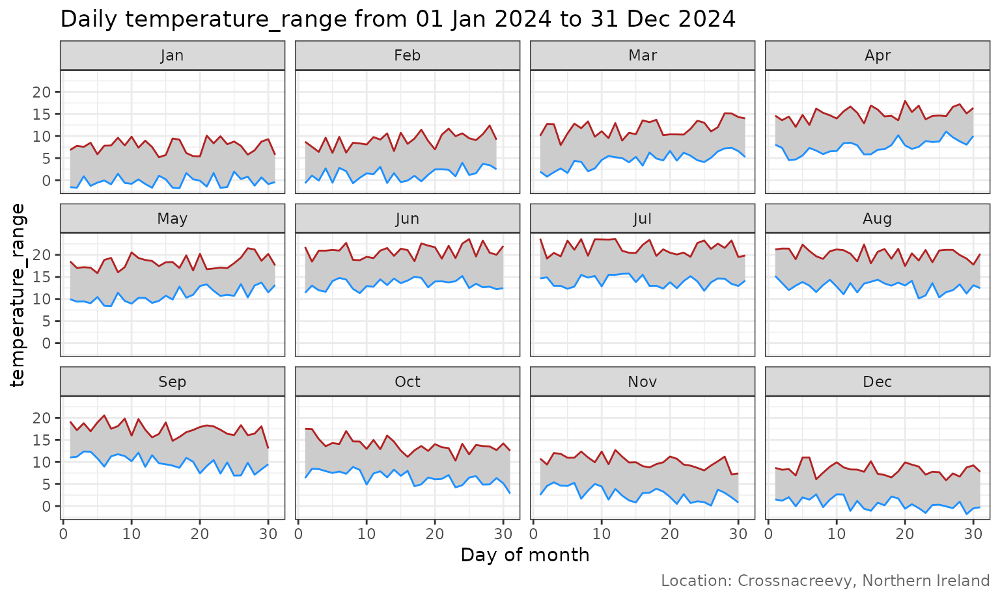

About this gallery
The plots below demonstrate the package’s plotting functions using a reproducible synthetic year of daily observations. They illustrate plot types and layout only; they are not actual Crossnacreevy station data.
Air temperature
Daily minimum and maximum temperature are shown together to highlight the diurnal range and seasonal cycle.
TemperaturePlot(sample_weather)
Rainfall
Daily rainfall is shown as a time series of daily totals.
RainfallPlot(sample_weather)
Soil temperature
The soil temperature plot compares the 15 cm and 45 cm measurements.
SoilTempPlot(sample_weather)
Leaf wetness and light
LeafWetnessPlot(sample_weather)
SolarRadPlot(sample_weather)
Monthly grid: daily rainfall
Each panel represents a calendar month, with day of month on the horizontal axis.
PlotMonthlyGrid(sample_weather, variable = "Rainfall mm")
Monthly grid: temperature range
The shaded ribbon spans the daily minimum and maximum temperatures.
PlotMonthlyGrid(sample_weather, variable = "temperature_range")
Exporting plots
Use `SaveWeatherPlots()` to write selected plots and monthly grids to a directory. The function invisibly returns the paths of the files created.
files <- SaveWeatherPlots(
sample_weather,
plots = c("temperature", "rainfall", "relative_humidity"),
monthly_grids = TRUE,
path = "weather-plots"
)
files